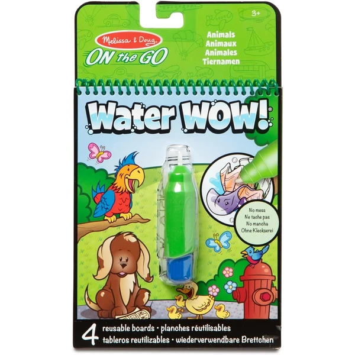
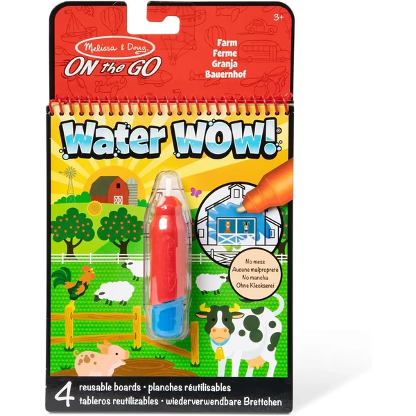
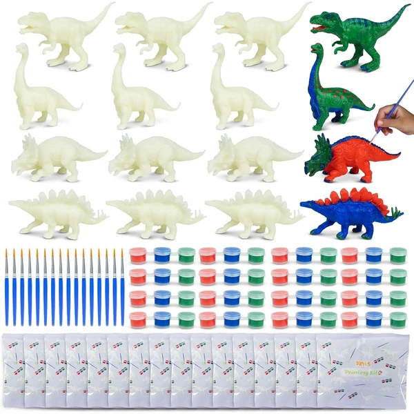
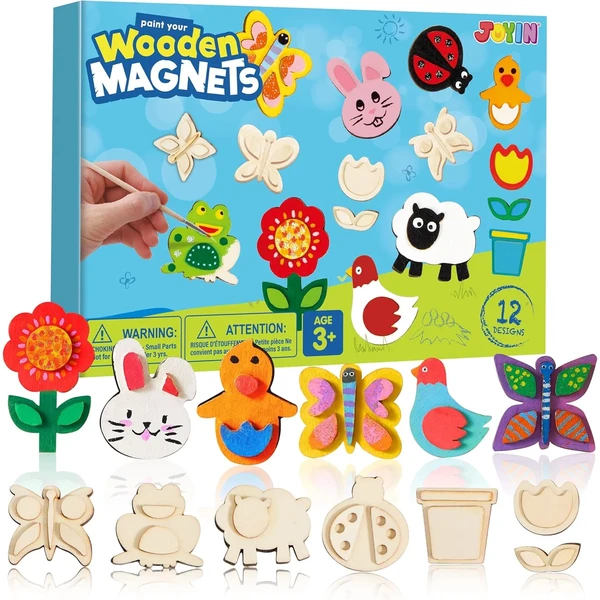
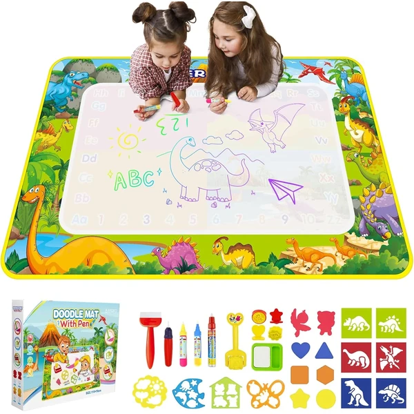
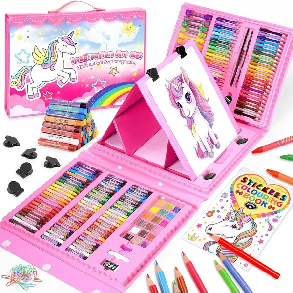

Las manualidades son un regalo ideal para los niños de 3 años que quieren hacer cosas con sus manos. En esta etapa disfrutan pintando, pegando, estampando o modelando, y el resultado importa menos que el proceso: lo que les engancha es experimentar con colores, texturas y materiales. Para esta edad conviene elegir manualidades sencillas y seguras, con piezas grandes y materiales no tóxicos. En esta selección encontrarás manualidades pensadas para manos de 3 años, perfectas para compartir en familia.
¿Qué desarrollan las manualidades?
Pintar, recortar o pegar es uno de los mejores ejercicios para la mano y la mente.
- Motricidad fina
- Creatividad
- Concentración
- Coordinación mano-ojo
- Paciencia
- Expresión emocional

Melissa & Doug Water Wow! Animales
Un libro mágico con 4 páginas reutilizables de temática animal para pintar solo con agua, sin manchar nada. El color aparece al pintar y desaparece al secarse, listo para volver a usar.
⭐ ¿Por qué nos gusta?
- ✔ Se pinta solo con agua, sin manchas ni tinta.
- ✔ Reutilizable una y otra vez.
- ✔ Formato compacto, ideal para viajes.
💬 Lo que más destacan las familias
Lo que más suele gustar es que se puede pintar en cualquier sitio sin miedo a manchar nada, así que se convierte en un básico para viajes y esperas. A los niños les llama la atención ver cómo aparece el color al pasar el pincel de agua y cómo se puede repetir una y otra vez.
Ver en Amazon

Melissa & Doug Water Wow! Granja
La misma propuesta que el Water Wow! de animales de esta lista, esta vez con temática de granja: cuatro páginas reutilizables para pintar solo con agua, sin manchar.
⭐ ¿Por qué nos gusta?
- ✔ Se pinta solo con agua, sin manchas ni tinta.
- ✔ Temática de granja, distinta a la versión de animales.
- ✔ Formato compacto, ideal para viajes.
💬 Lo que más destacan las familias
Muchos padres coinciden en que funciona igual de bien que la versión de animales, y suele comprarse como complemento para que el niño alterne temática cuando se cansa de una. La granja engancha especialmente a los que ya conocen los animales de este tipo de libro.
Ver en Amazon

BONNYCO Dinosaurios para Pintar
Un pack de 16 bolsitas individuales, cada una con una figura de dinosaurio, un set de tres pinturas y un pincel. Los dinosaurios vienen en cuatro modelos distintos, listos para pintar y jugar después.
⭐ ¿Por qué nos gusta?
- ✔ 16 bolsitas individuales, listas para repartir.
- ✔ Cuatro modelos distintos de dinosaurio.
- ✔ Pintura acrílica con base de agua, fácil de limpiar.
💬 Lo que más destacan las familias
Entre los comentarios más habituales aparece lo bien que funciona para cumpleaños, porque cada niño se lleva su propia bolsita lista para pintar sin líos de repartir material. Los peques disfrutan tanto pintando la figura como jugando con ella después.
Ver en Amazon

JOYIN Imanes de Madera para Pintar
Un kit con 12 imanes de madera de fantasía, paleta de pintura, pincel y pegamento con purpurina, para pintar y luego decorar la nevera con las creaciones terminadas.
⭐ ¿Por qué nos gusta?
- ✔ Las piezas terminadas se pueden exponer como imanes.
- ✔ Incluye pegamento con purpurina para decorar.
- ✔ Materiales sin BPA ni plomo.
💬 Lo que más destacan las familias
Se repite bastante el comentario de que gusta mucho que la manualidad no acabe en un cajón, sino colgada en la nevera para que el niño la vea todos los días. El toque de purpurina suele ser lo que más ilusión les hace al terminar.
Ver en Amazon

Alfombra de pintura con agua reutilizable
Una alfombra de 110x70 cm para pintar solo con agua, sin tinta ni manchas, con cuatro bolígrafos recargables y un libro de dibujo. El trazo desaparece al secarse y se puede volver a usar.
⭐ ¿Por qué nos gusta?
- ✔ Gran superficie, para pintar varios niños a la vez.
- ✔ Sin tinta ni manchas, se limpia solo al secar.
- ✔ Se pliega para guardar o llevar de viaje.
💬 Lo que más destacan las familias
No es raro encontrar comentarios sobre lo bien que funciona cuando hay más de un niño en casa, porque el tamaño da para que pinten juntos sin pisarse el espacio. También se valora que no deje ni rastro de tinta cuando se seca.
Ver en Amazon

HappyGoLucky Maletín de Pinturas
Un maletín con 208 piezas de material de dibujo y pintura: pasteles, lápices de cera, lápices de colores, rotuladores, acuarelas y accesorios, con un caballete de doble cara plegable incluido.
⭐ ¿Por qué nos gusta?
- ✔ 208 piezas, todo el material en un solo maletín.
- ✔ Caballete de doble cara para dos niños a la vez.
- ✔ Maletín de viaje, fácil de transportar.
💬 Lo que más destacan las familias
Quienes lo han comprado destacan que con tanto material dentro no hace falta comprar nada más en mucho tiempo, y que el maletín ayuda a mantener todo ordenado. El caballete de doble cara es de lo que más se menciona cuando hay dos hermanos pintando a la vez.
Ver en Amazon